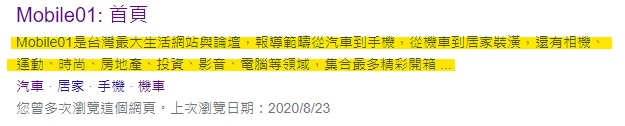
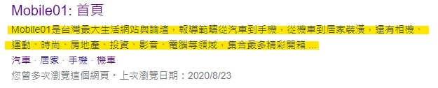
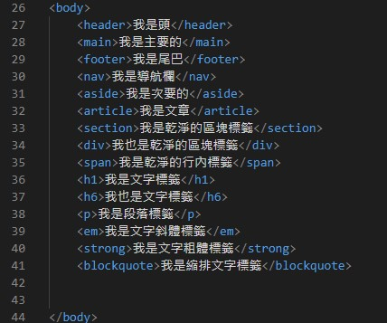
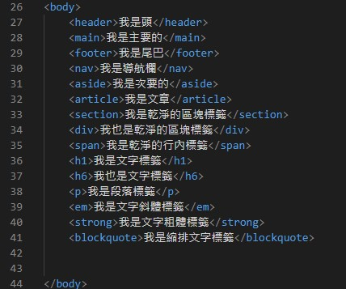

| NO.1 Title、Meta標籤應用 |
| TYPE: NOTE|最後更新日期:2021/05/31 |
| Title標籤顯示視窗文字 Meta標籤應用 設一個meta標籤為關鍵字(keywords)... |
| NO.2 href標籤應用 |
| TYPE: NOTE|最後更新日期:2021/06/02 |
| 新增視窗打開超連結作法 利用href跳轉至頁面最上方 利用id屬性... |
| NO.3 常用標籤 |
| TYPE: NOTE|最後更新日期:2021/06/03 |
| header網頁的頭 main網頁主要部分 footer網頁尾部... |
Title、Meta標籤應用
Title標籤顯示視窗文字
設一個meta標籤為關鍵字(keywords)
Content=接要的關鍵字，關鍵字多個可用,隔開
設一個meta標籤為網站描述(description)
Content=”描述的內容”
描述內容顯示位置如下圖

設一個meta標籤為編碼格式
Charset=”編碼類型”
清除快取meta標籤
設一個meta標籤為關鍵字(keywords)
Content=接要的關鍵字，關鍵字多個可用,隔開
設一個meta標籤為網站描述(description)
Content=”描述的內容”
描述內容顯示位置如下圖

設一個meta標籤為編碼格式
Charset=”編碼類型”
清除快取meta標籤
href標籤應用
網址:
路徑:
以當前HTML文件為起點
找到目標HTML的母資料夾
以./或../(.代表往前一層路經)以此類推
到母資料夾位置後再/後面加入路徑資料夾或HTML檔案
新增視窗打開超連結作法:
屬性target=””
_blank在新視窗中開啟連結
_self默認
利用href跳轉至頁面最上方
利用id屬性，跳展制任何位置
常用標籤
常用標籤紀錄:
header網頁的頭
main網頁主要部分
footer網頁尾部
nav網頁選單導航
aside網頁次要內容
article網頁文章
section乾淨的區塊標籤
div乾淨的區塊標籤
span乾淨的行內標籤
h1~h6(大~小)文字的區塊標籤
hgroup包在h標籤外的分組區塊標籤
p文字的段落區塊標籤
em斜體文字行內標籤
strong粗體文字行內標籤
blockquote縮排文字區塊標籤

實體代號紀錄:
header網頁的頭
main網頁主要部分
footer網頁尾部
nav網頁選單導航
aside網頁次要內容
article網頁文章
section乾淨的區塊標籤
div乾淨的區塊標籤
span乾淨的行內標籤
h1~h6(大~小)文字的區塊標籤
hgroup包在h標籤外的分組區塊標籤
p文字的段落區塊標籤
em斜體文字行內標籤
strong粗體文字行內標籤
blockquote縮排文字區塊標籤

實體代號紀錄: